Soba pod morem

Osoba u invalidskim kolicima sjedi usred sobe, a sa sva četiri zida oko nje pliva karipski greben. Tirkizna voda, koralji, ribe, kornjača i raža, i sunčeve zrake koje padaju s površine. Zvuk dolazi iz cijele sobe, kao da je osoba stvarno pod morem. Ništa se ne mora raditi, dovoljno je biti tu. A kad osoba to poželi, soba odgovara na njezin pokret i glas.
Kako je složeno

Na podu nema ničega osim ljudi. Sve visi sa stropa: uz svaki zid jedan ultrakratki laserski projektor okrenut naopako, koji baca sliku odozgo na zid, i osam malih zvučnika Adam Audio D3V u četiri para, također naopako, na stropnim nosačima s navojem. Uz svaki zvučnik je Android mobitel.
Sve vodi jedan Mac mini M6 s 24 GB memorije i 512 GB prostora. Svaki par zvučnika spaja se na njega preko USB-a. Budući da je USB kabel dobar samo do pet metara, USB ide kroz zid mrežnim kabelom: uz Mac je mali odašiljač, na stropu prijemnik, a između njih do 50 metara kabela Cat.6. macOS spaja sva četiri para u jednu veliku zvučnu karticu s osam kanala, pa svaki zvučnik dobiva svoj zvuk. Zvuk vodi Ableton Live, koji kišu, valove ili ribu koja prolazi može smjestiti u bilo koji kut sobe i polako je pomicati.
Shema spajanja
Mac mini M6 sam vodi tri zaslona (HDMI i dva Thunderbolt izlaza), pa četvrti projektor ide preko DisplayLink adaptera. HDMI optički kabeli rade samo u jednom smjeru i provlače se kroz zid zajedno s utikačima. Zvučnici, 3D mikrofon i zvučna kartica idu u USB hub s napajanjem jer Mac ima pet USB priključaka. Mobiteli šalju sliku kamere preko Wi-Fija, a pristupna točka je kabelom spojena na Mac. Uz svaki par zvučnika i uz svaki mobitel treba utičnica na stropu.
Mobitel uz svaki zvučnik
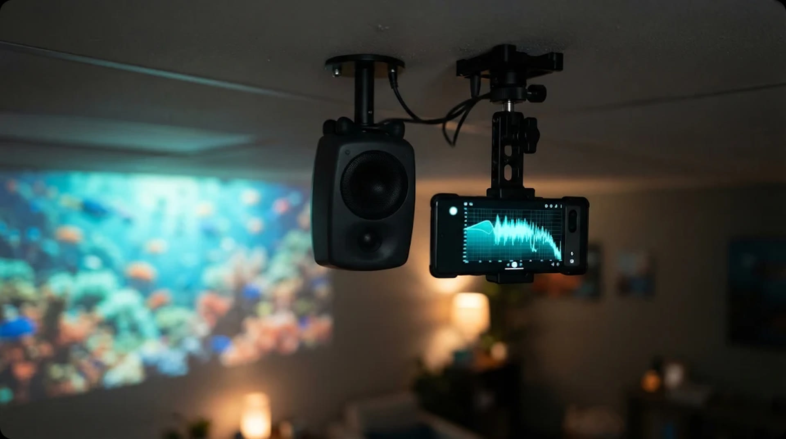
Mobitel uz zvučnik ima dvije uloge. Na ekranu pokazuje što taj zvučnik upravo svira, kao živi val zvuka, pa terapeut odmah vidi gdje je koji zvuk. A kamerom gleda u sobu. Osam kamera iz osam smjerova zna gdje je osoba, je li blizu ili daleko i kako joj stoji tijelo. Kad se osoba približi zvučniku, njegov zvuk se mijenja: postaje bliži, topliji ili se pojavi nova životinja.
Android ili iPhone?
Preporučujem Android. Na Androidu sam razvijam aplikacije i instaliram ih bez trgovine, Mac njima upravlja preko USB-a ili Wi-Fija (pokreće kameru, drži ekran upaljenim, mijenja postavke), a rabljeni Android s dobrom kamerom stoji oko 120 €. Moja aplikacija Skeleton već prima sliku s Android mobitela preko USB-a i Wi-Fija, četiri ili više odjednom. iPhone ima odličnu kameru, ali je skuplji, aplikacije idu samo kroz Appleovu trgovinu, a Mac ga kao kameru preko Continuityja koristi jedan po jedan.
Igra pokreta: opuštanje i aktivacija
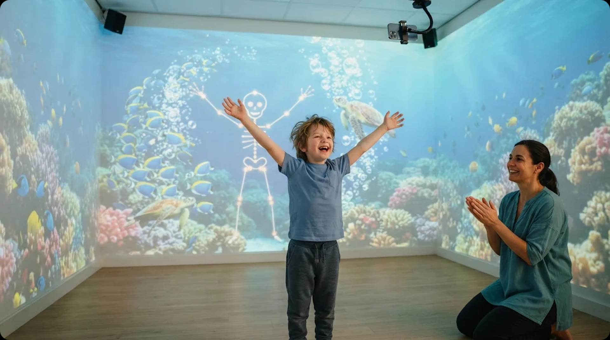
Za to koristim svoju aplikaciju Skeleton. Ona na sliku osobe stavlja kostur od linija i točaka, istovremeno s četiri ili više kamera, a mobiteli su te kamere. Terapeut odabere pokret, a aplikacija ga prikaže kao prozirnu siluetu. Dijelovi tijela postaju zeleni kad se poklope, a kad osoba pokret pogodi i zadrži ga, dolazi nagrada u slici i u zvuku. Težina se podešava, od vrlo blage za početak (velika tolerancija, kratko zadržavanje) do točnije.


Opuštanje
Pokreti su spori i mali: ruke se dižu s udahom i spuštaju s izdahom, glava se okreće prema zvuku. Slika je tamna i mirna, meduze i kitovi plivaju polako. Nagrada je nježna: zid zasvijetli toplije, kit zapjeva iz kuta sobe, kiša se utiša.
Aktivacija
Pokreti su veći i brži: ruke u zvijezdu, dohvatiti krug svjetla na zidu, nagnuti se, okrenuti se prema drugom zidu. Slika je svijetla i živa. Nagrada je vesela: jato riba proleti cijelom sobom, bubanj udari, mjehurići se razlete iz svih zvučnika.
Pjevaj i dobij svoju pjesmu

Soba je i igralište s umjetnom inteligencijom. Osoba otpjeva nekoliko taktova ili samo melodiju u mikrofon, terapeut pritisne gumb, i za minutu iz svih zvučnika dođe cijela pjesma nastala iz te melodije. Za osobe s teškoćama to je velika nagrada: čuju svoj glas i svoju ideju kao pravu pjesmu.
Za to služi Suno. Snimka se učita u Suno (Upload audio), a Suno od nje napravi cijelu pjesmu (Cover ili Extend). Besplatni račun daje oko deset pjesama dnevno, bez prava na komercijalnu upotrebu, što je za osobnu nagradu dovoljno. Da pjesmu pjeva baš glas te osobe, Suno ima mogućnost Voices u plaćenom Pro paketu, a glas osoba mora sama potvrditi. Za djecu sve ide uz pristanak roditelja.
Snimanje u 3D

Soba je i studio za 3D snimanje. Sa stropa u sredini visi Zylia, jedna kugla s 19 mikrofona, spojena USB-om. Ona snima prostor u tri dimenzije, pa se sve što se u sobi dogodi, pjesma, bubnjanje u krugu ili glas terapeuta, može poslije reproducirati na osam zvučnika točno kako je zvučalo, sa svih strana. Uz nju četiri viseća kondenzatorska mikrofona snimaju glasove i instrumente izbliza.
Kad soba miruje: studio za nove vježbe
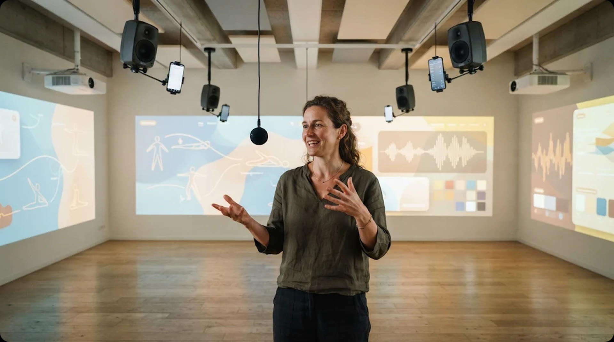
Kad nema terapije, soba postaje radionica. Terapeut govori u mikrofon što bi trebalo: novu vježbu za ruke, novu zvučnu scenu sa šumom i pticama, novu igru za dvoje djece. Claude Code na Mac miniju to napiše i složi: nove poze za Skeleton, nove zvukove i slike za zidove. Za to treba pretplata Claude Max od oko 200 € mjesečno.
Oprema i softver
Oprema
| Stavka | Kom. | Cijena po kom. | Ukupno | Gdje |
|---|---|---|---|---|
| Apple Mac mini M6, 24 GB memorije, 512 GB SSD cijena iz tiska, provjeriti u konfiguratoru | 1 | 1.489,00 € | 1.489,00 € | apple.com/de |
| Optoma ZH430UST, ultrakratki laserski projektor, Full HD, 4.000 lumena | 4 | 1.398,00 € | 5.592,00 € | beamer-discount.de |
| Optoma OWM3000, stropni nosač za ultrakratki projektor | 4 | 107,73 € | 430,92 € | office-partner.de |
| pro snake AOC HDMI 15 m, optički HDMI kabel do projektora | 4 | 69,00 € | 276,00 € | Thomann |
| DisplayLink USB-C na HDMI adapter za četvrti projektor (OWC Dual HDMI) cijena iz usporedbe cijena | 1 | 97,90 € | 97,90 € | OWC |
| Adam Audio D3V, par aktivnih zvučnika s USB-C ulazom | 4 | 259,00 € | 1.036,00 € | Thomann |
| Adam Audio D3V produžni kabel između zvučnika u paru | 4 | 14,99 € | 59,96 € | Thomann |
| iriz CM550, stropni nosač s navojem 3/8" za zvučnik | 8 | 46,00 € | 368,00 € | Thomann |
| Lindy USB 2.0 preko mrežnog kabela Cat.6, do 50 m (USB kroz zid) | 4 | 129,00 € | 516,00 € | Thomann |
| USB hub s napajanjem, 7 priključaka, za Mac mini | 1 | 40,00 € | 40,00 € | procjena |
| Android mobitel s kamerom uz svaki zvučnik (rabljeni Pixel ili sličan) | 8 | 120,00 € | 960,00 € | procjena |
| Godox MTH02, držač mobitela s navojem 1/4" | 8 | 18,00 € | 144,00 € | calumet.de |
| USB punjač za mobitel na stropu | 8 | 10,00 € | 80,00 € | procjena |
| Ubiquiti UniFi U7 Pro, Wi-Fi 7 pristupna točka na stropu cijena iz usporedbe cijena | 1 | 190,00 € | 190,00 € | heise.de |
| Zylia ZM-2, 3D mikrofon s 19 kapsula u jednoj kugli, USB cjenik bez PDV-a, dostupnost na upit | 1 | 1.625,20 € | 1.625,20 € | zylia.co |
| Audio-Technica PRO 45, viseći kondenzatorski mikrofon | 4 | 109,00 € | 436,00 € | Thomann |
| Behringer UMC404HD, USB zvučna kartica s 4 mikrofonska ulaza | 1 | 95,00 € | 95,00 € | Thomann |
| Mrežni kabeli Cat.6 kroz zid, zidne utičnice i spojnice | 1 | 150,00 € | 150,00 € | procjena |
| Oprema ukupno | 13.585,98 € | |||
Softver, jednokratno
| Stavka | Kom. | Cijena | Ukupno | Gdje |
|---|---|---|---|---|
| Ableton Live 12 Suite (s Max for Live), vodi svih osam zvučnika | 1 | 479,00 € | 479,00 € | Thomann |
| Envelop for Live i IEM Plugin Suite, prostorni zvuk i 3D dekoderi besplatno | 1 | 0,00 € | 0,00 € | envelop.us |
| ZYLIA Studio, snimanje i pretvorba 3D zvuka uz mikrofon | 1 | 0,00 € | 0,00 € | zylia.co |
| Skeleton, moja aplikacija za praćenje pokreta s više kamera besplatno | 1 | 0,00 € | 0,00 € | Marko Boško |
| MilkDrop vizualizacije (butterchurn) besplatno | 1 | 0,00 € | 0,00 € | butterchurn |
| Softver ukupno | 479,00 € | |||
Mjesečno i godišnje
| Pretplata | Mjesečno | Gdje |
|---|---|---|
| Claude Max (Claude Code), studio u kojem nastaju nove vježbe 200 $ mjesečno + PDV, oko 214 € | 214,00 € | claude.com |
| Suno, besplatni račun za svaku osobu (10 pjesama dnevno) Pro oko 10 $ mjesečno za vlastiti glas | 0,00 € | suno.com |
| myNoise, licenca za korištenje u terapijskoj sobi godišnja licenca, cijenu predlaže korisnik | na upit | mynoise.net |
| YouTube, playlista DJ Mantra besplatno | 0,00 € | youtube.com |
| Mjesečno ukupno (bez licence za myNoise) | 214,00 € |
Jednokratno ukupno: 14.064,98 €, uz to oko 214,00 € mjesečno. Cijene su od 21.11.2026. i uključuju PDV, osim gdje piše drugačije.
Prije kupnje: kod Optome potvrditi da ZH430UST radi okrenut naopako i da mu odgovara nosač OWM3000. Adam D3V ima navoj 3/8" s donje strane i izravno se navije na stropni nosač; proizvođač ne navodi rad naopako, pa svaki zvučnik dobiva i sigurnosnu sajlu. Godox ne radi stropne nosače, pa je umjesto stalka za rasvjetu odabran stropni nosač s istim navojem. Zylia trenutno nema na zalihi u Njemačkoj, cijena je iz Zylijinog cjenika bez PDV-a. Stavke označene kao procjena nisu provjerene u trgovini. U iznos nisu uključene utičnice na stropu i ugradnja.
Svaram: Soundgarden i Sonorium
Dok sam živio u Aurovilleu, snimao sam filmove za Svaram, radionicu i istraživački centar za zvuk i instrumente. Njihova dva prostora su uzor za ovu sobu i bila bi prekrasno igralište za djecu s teškoćama: instrumenti koje dijete može dotaknuti, pokrenuti i osjetiti cijelim tijelom.
Soundgarden
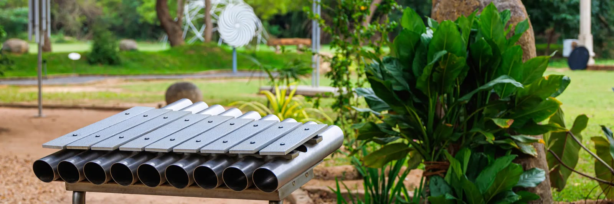
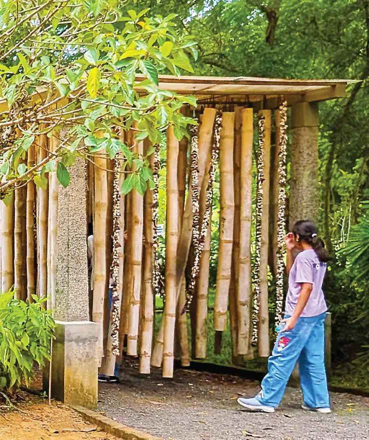
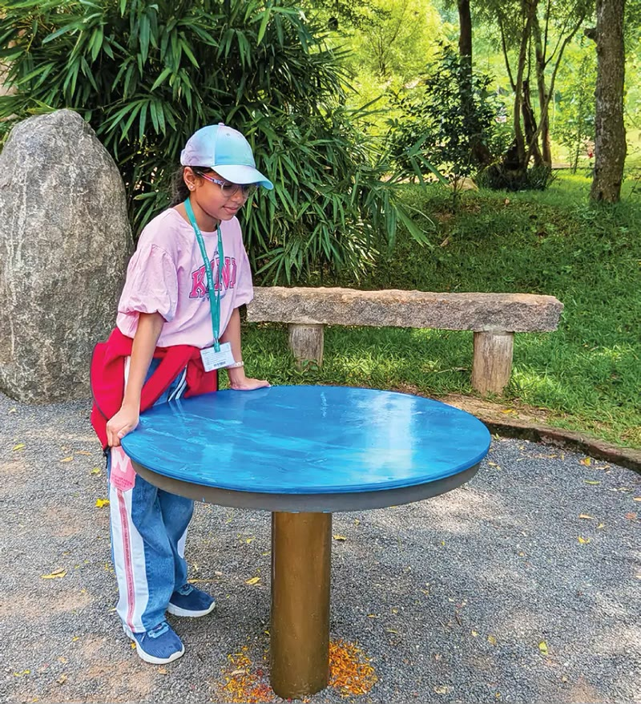
Zvučni vrt na otvorenom pun je instrumenata od kamena, bambusa, metala i drveta: kamenje koje zvoni, krug cijevnih zvona, zvučne ploče i bubanj oluje. Svatko može svirati, bez ikakvog znanja.
Sonorium

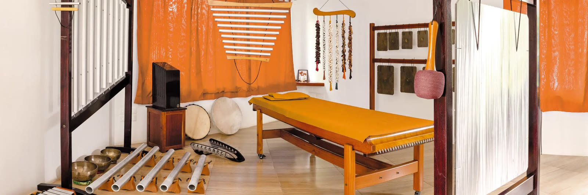
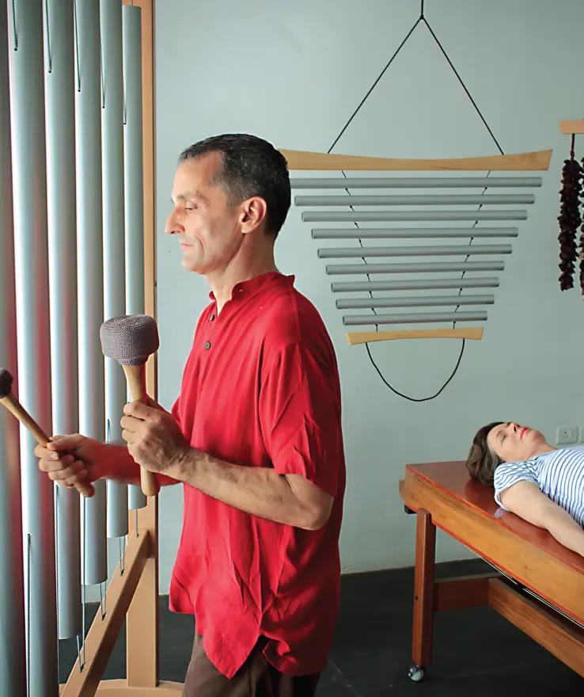
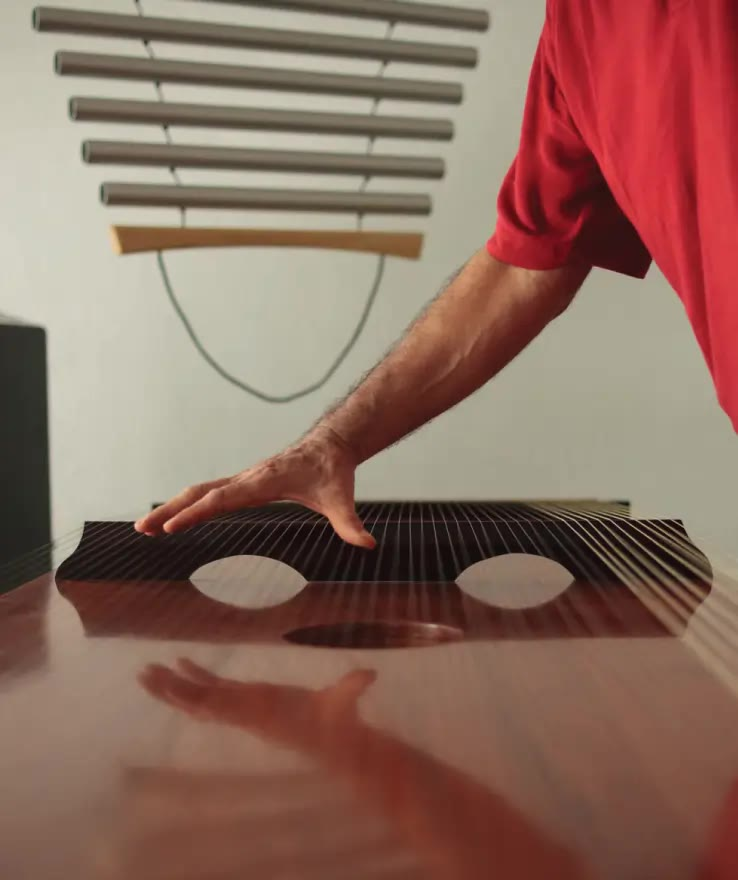
Sonorium je prostor za zvučno iscjeljivanje: veliki monokordi, gongovi i zvona postavljeni u krug, a u sredini Nidranantar, instrument na kojem se leži. Zvuk i vibracija prolaze kroz cijelo tijelo.
Fotografije: Svaram, Auroville (svaram.org). Filmove sam snimio ja za Svaram. Više mojih filmova iz Aurovillea: Auroville Videos by Marko Bosko.
Soba za terapiju bojom i zvukom
Ista soba s četiri zida, ali s drugom namjenom: boja, svjetlo i glazba. Osnova joj je moja Mantra Room. Na zidovima su spore boje i MilkDrop vizualizacije, a glazbu biraju terapeut i osoba zajedno.
Kako to izgleda

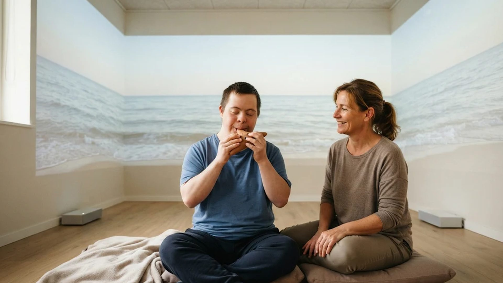
MilkDrop: moje vizualizacije na zidovima

MilkDrop je vizualizacija koja crta tekuće, žive slike iz glazbe. Koristim je u svojoj Mantra Room i ovdje: na četiri zida slika polako teče i mijenja se s glazbom. Za terapiju biram samo spore, nježne predloške, bez bljeskova. Ovo su četiri prava kadra iz MilkDropa:

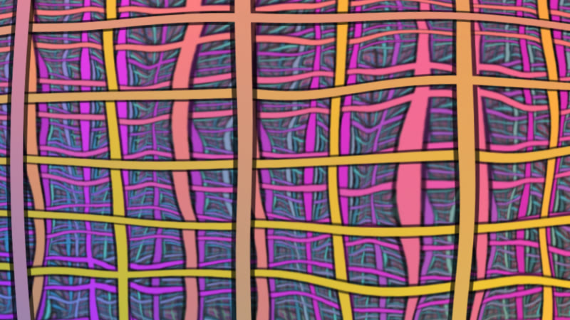

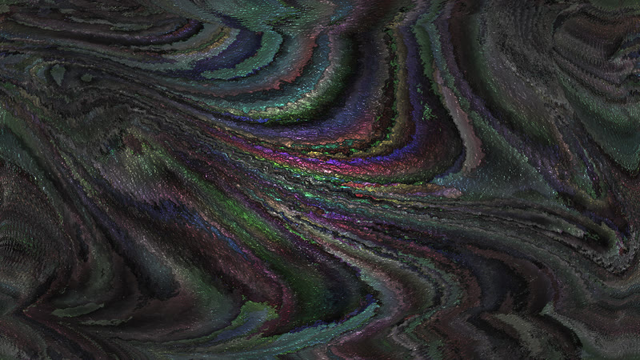
Cijeli zaslon: MilkDrop crta sliku iz zvuka "Karipsko more", koji sam napravio za ovu sobu. Esc ili gumb Izlaz vraća na stranicu.
DJ Mantra: ambijentalna playlista
Za mirne trenutke u sobi složio sam playlistu mekane, ambijentalne glazbe: Chantress Seba, Nils Frahm, Trentemøller i još nekoliko tihih skladbi. Glazba se pušta s YouTubea, a u sobi se šalje na svih osam zvučnika.
- Chantress Seba i Malte Marten – Song from the Forest
- Nils Frahm – Says
- Trentemøller – Miss You
- Chantress Seba – You Are Light
- Nils Frahm – Ambre
- Trentemøller – Nightwalker
- Ólafur Arnalds – Near Light
- Nils Frahm – Familiar
- Chantress Seba i Malte Marten – The Oracle
- Brian Eno – An Ending (Ascent)
- Nils Frahm – Sunson
- Hania Rani – Glass
- Jon Hopkins – Abandon Window
- Marconi Union – Weightless
Zvučni pejzaži: myNoise
Za kišu, more, šumu i vjetar koristim myNoise. Svaki pejzaž ima deset kanala koje mogu posebno podesiti i rasporediti po osam zvučnika: kapi kiše u kutovima, šum iz daljine sa stropa, dubina mora iz cijele sobe. Za korištenje u terapijskoj sobi myNoise traži godišnju licencu.
Kiša More Prašuma Vjetar Zdjele koje pjevaju
Preporuka za osoblje: Euphony Trio (kristalna zvona) – Alan Tower
Euphony su kristalna zvona koja se vrte do sedam minuta, a njihov se zvuk kaskadno razlijeva cijelom sobom. Alan Tower izrađuje ih u više izvedbi: Euphony Solo, Duo i Trio te Bubble Board, a izrađuje i batiće za sviranje. Za našu sobu preporučujemo Euphony Trio, jer dugi, polagani tonovi pune prostor mirnom prisutnošću dok se slika mora lagano miče po zidovima. Svira ga terapeut, a ostali samo slušaju i osjećaju.
Cijena na upit. Alan Tower nudi i savjetovanje preko Zooma.
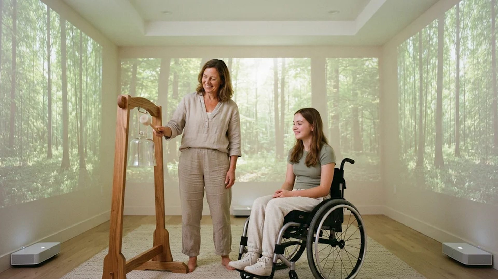
Poslušaj: Euphony Flumie Float (oko 56 minuta, najbolje sa slušalicama) innato.us
Preporučujemo: Marko Borić, terapeut i graditelj bubnjeva

Marko Borić gradi bubnjeve i može napraviti velike bubnjeve na kojima svira više djece zajedno, što je savršeno za grupne terapije djece s posebnim potrebama. Uz to može voditi radionicu izrade tresalica (šejkera) i bubnjeva, u kojoj svatko sam napravi svoj instrument, pa je sviranje još draže.
Instrumenti za sviranje
Jednostavni i sigurni instrumenti na kojima osobe s posebnim potrebama mogu svirati same. Izrađuje ih Stonewhistle (Hans Houkes, Nizozemska), od najlakšeg prema zahtjevnijima.
Pet tonova i oktava, pa svaka kombinacija rupica zvuči skladno. Svira se jednim sporim, mekim izdahom, tako da gotovo nikakva tehnika nije potrebna.
Mala i lagana glinena flauta nježne ljestvice na kojoj nijedan ton ne zvuči krivo. Lako se drži jednom rukom i svira se tihim dahom.
Mala flauta s tri komore u kojoj svaka kombinacija prstiju daje ugodan troglas, pa je nemoguće pogriješiti. Teška je samo 100 g.
Ista jednostavna Natey flauta, malo dubljeg glasa, bez potrebe za ikakvim predznanjem. Dolazi sa zaštitnom torbicom.
Ista ZEN flauta u većoj izvedbi: niži ton i više mjesta za veće ili manje precizne ruke.
Velika flauta s tri komore, drži se objema rukama. Svaka kombinacija prstiju zvuči lijepo, pa je razumljiva svakome.
Dvije povezane pentatonske komore daju topao stereo zvuk: jedna strana za melodiju, druga za bordun. Ova poveznica vodi na preprodavača OneTone, a ne u Stonewhistleovu trgovinu; cijena je početna i ovisi o tonalitetu.
Iskreno: flaute se rade po narudžbi i čeka se otprilike 3 do 5 mjeseci. Glina je lomljiva i čisti se samo suhom mekom krpom. Za sviranje je potreban dah. Ako dah nije moguć, dobra je alternativa bez daha veliki bubnjevi i radionica tresalica Marka Borića. Prije narudžbe za osobe s posebnim potrebama preporučujemo upit proizvođaču.
Kako se sviraju ove flaute
Moj video: kako se sviraju glinene flaute Stonewhistle.
Preuzmi aplikacije
Chakra and Elements Toning (Mantra)
Aplikacija za meditaciju, sa zvukovima čakri i elemenata. Za Android.
Kognitivna aplikacija za Eminu
Još je u izradi i nema javnog izdanja. Čim bude spremna, preuzimanje će se pojaviti ovdje.
Uskoro
Projekt izrađen za
Edukacijsko-rehabilitacijski fakultet Sveučilišta u Zagrebu
Za: prof. dr. sc. Renata Martinec i asistentica Brigita Vilč, Odsjek za motoričke poremećaje, kronične bolesti i art terapije (ERF)
Fakultet je 1962. godine počeo kao Visoka defektološka škola, a danas je na kampusu Borongaj, gdje oko 1100 studenata uči za edukacijske rehabilitatore, logopede i socijalne pedagoge. Uz prijediplomske i diplomske studije imaju specijalistički studij rane intervencije, doktorski studij prevencijske znanosti i studija invaliditeta te niz edukacija u Centru za cjeloživotno učenje. Rade u odsjecima za inkluzivnu edukaciju i rehabilitaciju, logopediju, oštećenja vida, oštećenja sluha, poremećaje u ponašanju, kriminologiju te motoričke poremećaje, kronične bolesti i art terapije. Istražuju i u laboratorijima, primjerice za asistivnu tehnologiju, potpomognutu komunikaciju i dječju komunikaciju. Praksa se odvija u njihovom Nastavno-kliničkom centru, gdje stručnjaci pružaju procjenu, individualnu i grupnu podršku te savjetovanje, a studenti uče promatrajući rad s korisnicima. Fakultet promiče inkluziju i prava marginaliziranih skupina u društvu. Senzorna soba u kojoj se slika, zvuk i boja spajaju prirodno se uklapa u takav rad, jer ljudima s posebnim potrebama nudi miran prostor u kojem se mogu opustiti i sami birati što ih privlači.
Sažetak se temelji na stranicama fakulteta. Više: Nastavno-klinički centar, odsjeci, laboratoriji.
O meni
markobosko.org, moja biografija djmantra.markobosko.org, DJ MantraSlike u ovoj stranici prikaz su zamišljene sobe i izrađene su umjetnom inteligencijom.